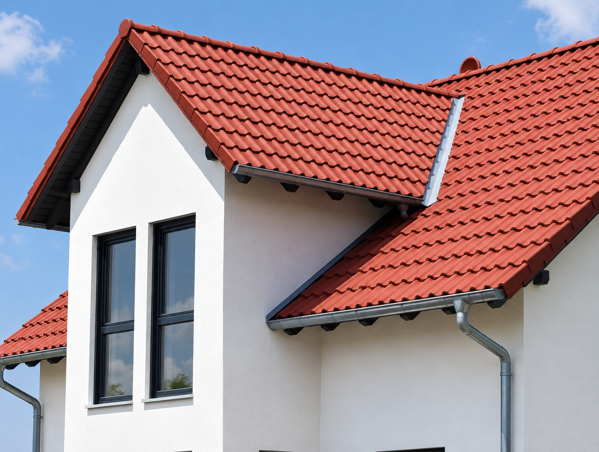
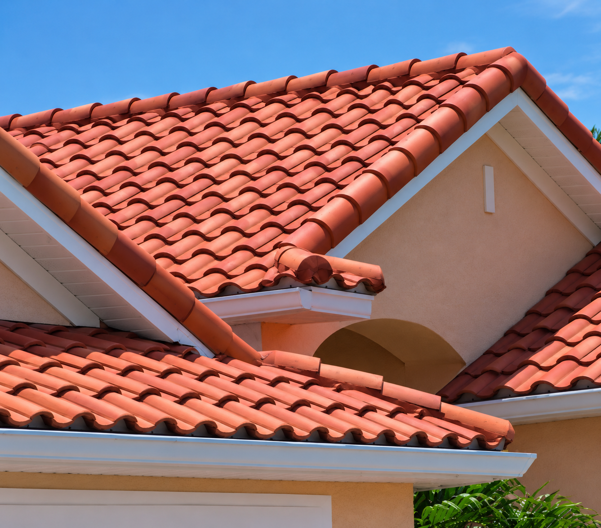
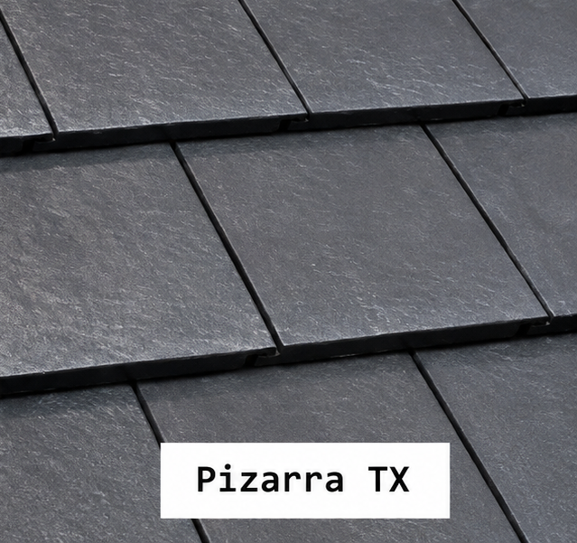
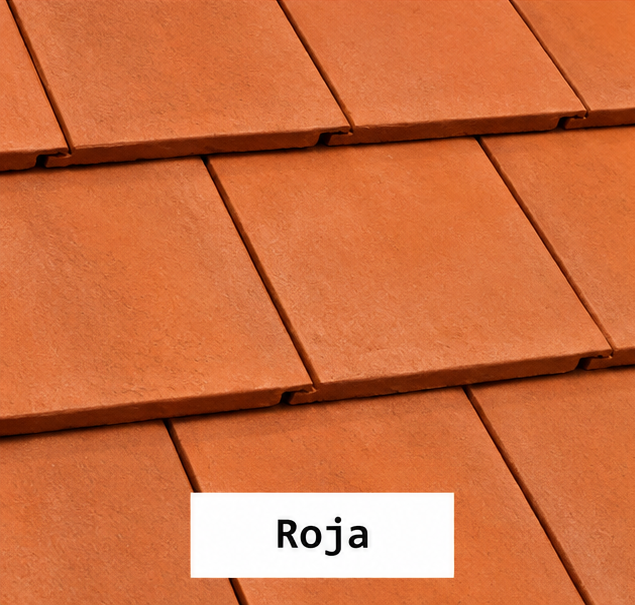
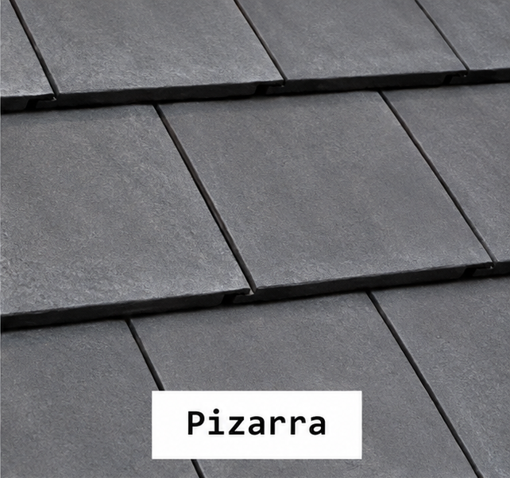
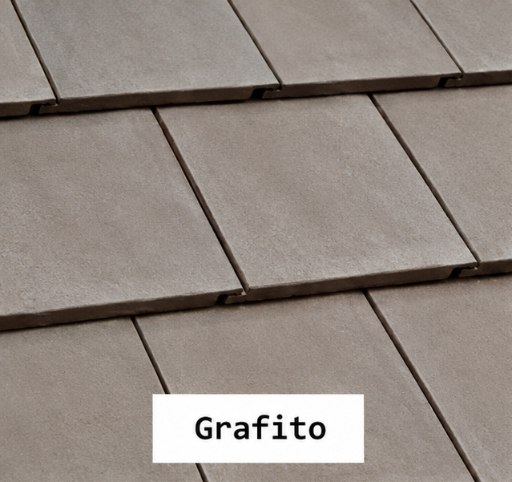

Calidad que te cubre. Diseños que perduran.
En TEJON elaboramos tejas cerámicas pensadas para combinar resistencia, estética y la calidez de los materiales tradicionales.
Ver productos ContactanosLa planta de Tejones produce entre 4.000 y 6.000 tejas cerámicas por mes, distribuidas entre los modelos italiano, romano y francés. Gracias a su maquinaria semiautomática y a un estricto control de calidad, la empresa ofrece productos resistentes y duraderos. Desde su fábrica en Villa General Belgrano, abastece proyectos de construcción y distribuidores de todo el país
Elegí el perfil para tu proyecto
Conocé nuestros tres modelos de tejas cerámicas y elegí el estilo que mejor se adapta a tu obra.

Italiana
Perfil clásico y elegante, ideal para cubiertas de aspecto tradicional.
Conocer Italiana →
Romana
Diseño de líneas simples que busca equilibrio entre estética y funcionalidad.
Conocer Romana →
Francesa
Formato de inspiración europea para proyectos con una imagen distintiva.
Conocer Francesa →Elegí el color para tu proyecto




Tradición cerámica, mirada local.
Tejones es una empresa dedicada a la fabricación y comercialización de tejas cerámicas de alta calidad para viviendas, edificios y todo tipo de construcciones. Su objetivo es ofrecer productos resistentes, duraderos y con un diseño atractivo que brinden protección y una excelente terminación a cada proyecto.
La planta de Tejones produce entre 4.000 y 6.000 tejas cerámicas por mes, distribuidas entre los modelos italiano, romano y francés. Gracias a su maquinaria semiautomática y a un estricto control de calidad, la empresa ofrece productos resistentes y duraderos. Desde su fábrica en Villa General Belgrano, abastece proyectos de construcción y distribuidores de todo el país
Buscamos ofrecer una experiencia simple: asesoramiento, variedad de diseños y soluciones pensadas para viviendas y pequeños proyectos constructivos.
Una propuesta simple para tu obra.
Todo lo necesario para conocer el producto antes de decidir.
Calidad
Enfoque en terminaciones uniformes y cuidado del producto.
Diseño
Tres perfiles para acompañar diferentes estilos arquitectónicos.
Asesoramiento
Orientación para conocer medidas, cantidades y características.
Identidad local
Una marca pensada desde Villa General Belgrano, Córdoba.
Hablemos de tu techo.
Escribinos para conocer disponibilidad, cantidades orientativas y opciones de nuestros tres modelos de tejas.